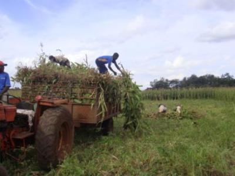
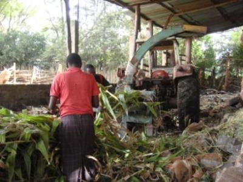
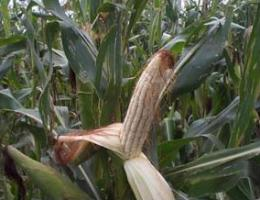
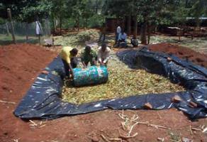
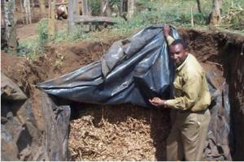

Silage making
{kind=link}
Introduction
Ideal characteristics of material used in silage making:
- Moisture content of 60-70%.
- pH below 4.2 for wet crops and below 4.8 for wilted silage.
Species of grass used:
- Napier grass
- Sorghum
- Maize
- Sugarcane tops
Advantages of Silage:
- Helps ease feed shortages during dry seasons.
- Adequate feed is available all year round; hence animals remain in good health. Silage can be made using fresh or better wilted material.
|  |
| Harvesting for silage |
| (c) S. Fontana
|
| Making silage |
| (c) S. Fontana
|
|  |
| Feeding a forage chopper with forage |
| (c) S. Fontana
|
How to make silage
- The crop should be ready to harvest: The seed of forage sorghum or maize should be soft but not milky when you squeeze it open.
- Napier grass (pennisetum) needs to be about a metre high (up to a man's waist).
- Legumes should have young pods which are not dry.
- If it has been raining and the forage is wet, or if the forage seems immature (the seed is very milky) then it is best to harvest it and leave it in the sun for a few hours to wilt (too much water in the forage can spoil the silage).
- The chopping and bagging area or silage pit must be clean and ready for the forage.
- Ensure proper compaction whether pit or bag silage is being made
- Seal the silage material and make sure the silo is air tight. Silage is formed through anaerobic fermentation by microorganisms.
- Carefully and step by step open a small portion of the silage when need arises for feeding and seal the remaining silage immediately after the removal.
In Kenya, the common method of silage making are through use of:
- Trench/Pit silos
- Plastic/Bag silos
A trench silo is built underground or semi-underground. A tractor or heavy loads are used to compact the material within the silo. Thereafter the silo is covered with a plastic sheet, weighed down with soil. This help maintain anaerobic conditions.
For plastic silos:
- Harvested fodder is chopped into 1'' lengths, mixed with molasses diluted in water (1:2)
- The mixture is then packed into a polythene tubing
- When the tube is filled, both ends are tightly tied
- The bag is then placed in an airtight container for the fermentation to occur.
The advantage of plastic silos is that they are low cost and can be moved easily. The quality of silage obtained, with maximized nutrient preservation, depends on the quality of the fodder used, the ensiling process and use of molasses. For example, Napier grass should be ensiled when 1 meter in length (101 days after planting). Properly ensiled material can store up to one year without losing quality.
Pit silage
|  |
| Maize cob |
| (c) J.O Ouda, KARI, Kenya
|
Step 1. The crop should be ready to harvest: The seed of forage sorghum or maize to be soft but not milky when you squeeze it open.
Step 2. Napier grass (pennisetum) needs to be about a metre high (up to a man's waist).
Step 3.If there are legumes growing between the crop or bana grass, make sure the legumes have young pods which are not dry.
Step 4. If it has been raining and the forage is wet, or if the forage seems immature (the seed is very milky) then it is best to harvest it and leave it in the sun for a few hours to wilt (too much water in the forage can spoil the silage).
 |
| Chopping and bagging of silage materia |
| (c) J.O Ouda, KARI, Kenya
|
Step 5. The chopping and bagging area or silage pit must be clean and ready for the forage. If possible, a big piece of plastic should be spread out as shown below.
Step 6. Ensure proper compaction whether pit or bag silage is being made.
|  |
| Sorghum silage made in a pit by smallholder dairy farmer in Gilgil, Nakuru District |
| (c) J.O Ouda, KARI, Kenya |
|  |
| Sorghum silage made in a pit by smallholder dairy farmer in Gilgil, Nakuru District |
| (c) J.O Ouda, KARI, Kenya |
Step 7. Seal the silage material by ensuring no air can penetrate. Silage is formed through anaerobic fermentation by microorganisms.
Step 8. Carefully and step by step open a small portion of the silage when need arises for feeding and seal the remaining silage immediately after the removal.
Silage making from Hyacinth
- Water hyacinth is rich in Nitrogen, Phosphorus, Potassium as well as other plant nutrients.
- Silage is made by combining wilted water hyacinth with 10% maize bran and allowing the mixture to ferment for 20 days.
- The finished product is golden brown in colour, sweet smelling, readily acceptable to cattle and may be stored for long periods without loss of quality.
The process is as follows:
- Take fresh hyacinth from a clean water body. The roots should removed and may be dried to be used as an ingredient in potting soil
- Chop the shoots of the plant (leaves, petioles, and rhizome) into pieces and air dry. Drying a large pile requires about two days until the leaves and stalks are just beginning to wilt.
- Mix thoroughly the plant pieces with maize bran in the ratio of 11:1 respectively; making sure the bran coats the pieces evenly. This will not be possible if the water hyacinth is too dry. In such a case, sprinkle some water over the water hyacinth and re-mix the materials together.
- Tightly pack the mixture into a large, air-tight plastic bag and close bag with string or wire. Squeeze out any remaining air when tying the plastic bag.
- Stack 3 to 4 bags in an upside-down position. This minimizes the entry of air from any tears in the plastic bags.
- Place the bags away from the sun or cover with a non-transparent sheet. It is normal for the bags to feel warm to the touch after three days or so. The contents will turn from green to olive to brown during the first week.
- The silage is ready for use after 14 to 20 days and can be stored for several months without loss of quality.
Uses of Water Hyacinth Silage:
- This silage is used as a feed supplement.
- Cattle, pigs, goats and rabbits are well suited for it, but poultry does not do to well.
- The silage is approximately 20% dry matter.
- The dry matter contains 13% crude protein, 20% acid detergent fibre, 0.4% calcium and 0.8% phosphorus.
- Silage may be prepared by substituting molasses for maize brain but the resulting feed is lower in dry matter and crude protein. The silage resulting without addition of either maize bran or molasses has poor nutritional value and storage characteristics.
Information Source Links
- Mudavadi, P. Preparing for the Dry spell: Farmers in Kipkaren and Ol Kalou in Kenya, experiment with the polythene tube silage technology.
- Ouma, R., Njoroge, L., Romney, D., Ochungo, P., Staal, S., & Baltenweck, I. (2007). Targeting dairy interventions in Kenya;A guide for development planners,researchers and extension workers. Nairobi, Kenya: SDP/KDDP.
- Savala, C. E., Omare, M. N., & Woomer, P. L. (2003). Organic resource management in Kenya: perspectives and guidelines. (C. E. Savala, Ed.) Forum for Organic Resource Management and Agricultural Technologies.